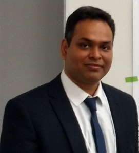

AI & NLP Researcher
I am an experienced AI researcher and NLP architect with a proven track record spanning top-tier academic institutions and global enterprise R&D. Currently serving as a Postdoctoral Researcher at TUM Campus Heilbronn and formerly a Lead Scientist at Wipro Lab45, I specialize in Natural Language Processing and Deep Learning. I build AI that grasps the true nuances of human communication. My current research focuses on culturally aware Machine Translation, Pragmatics in MT, autonomous Agentic workflows, and Quantum NLP. I am also actively involved in guiding theses and mentoring students in cutting-edge AI research.

Continuing our journey to bridge quantum computing and computational linguistics, we are co-organizing the next iteration of the QNLP Workshop at ICON 2026, following our successful event at IJCNLP-AACL 2025.
I am actively co-organizing the WMT 26 Shared Task on Indic Language Translation. We are evaluating submissions focused on robust translation between English and various low-resource Indic languages. Learn more about the task.
I am thrilled to be collaborating as a Postdoctoral Researcher within the MCML Research Group Alexander Fraser. Our focus aims at addressing data sparsity and integrating linguistic knowledge in advanced AI systems.
Currently driving research in data analytics, Pragmatics in MT, personalized translation, and deep learning architectures.
Over six years leading applied AI research and architecting enterprise-scale solutions. Bridged the gap between academic theory and scalable production models.
Completed my PhD and served as a Postdoctoral Researcher at DFKI and Saarland University, shaping early advancements in automated post-editing and interactive MT.
Conducted foundational research in NLP and Machine Translation, building the groundwork for my advanced studies in computational linguistics.
Enhancing contextual understanding, regional dialect processing, and user-specific adaptations in automated translation frameworks.
Investigating autonomous workflows, system translation, and automatic post-editing specifically for low-resource Indic languages.
Exploring Latent Backward Planning (LBP), Latent Visual Reasoning (LVR), and the efficiency of State Space Models (S4/Mamba).
I am actively supervising theses at TUM Campus Heilbronn. If you are passionate about PyTorch, LLMs, or low-resource machine translation, please get in touch.
Developing contextual awareness algorithms to improve translation accuracy for regional dialects.
Designing multi-step autonomous reasoning systems mapped to low-resource Indic languages.
A comparative analysis of reverse-logic deduction capabilities in modern LLM architectures.
I am currently looking for students with a strong technical background to assist with ongoing AI framework development and data curation. Experience in the following areas is highly desired:
Currently delivering academic lectures at the university level, bridging theoretical AI concepts with practical implementations.
Foundational and advanced concepts in statistical learning, model evaluation, and predictive analytics.
Comprehensive exploration of modern NLP, from sequence-to-sequence models to transformer-based LLMs.
In-depth study of neural network architectures, including CNNs, RNNs, Attention mechanisms, and State Space Models.
Specialized topics including Dialect Adaptation, Pragmatics in MT, and Low-Resource language processing.
Seminar focusing on autonomous workflows, Latent Backward Planning, and prompt engineering strategies.
Hands-on implementation of machine learning models using PyTorch, Hugging Face, and cluster environments.
A mix of interactive interface demonstrations and enterprise-scale applied AI initiatives.
An advanced interface utilizing Handwriting, Touch, and Speech commands specifically designed for Post-Editing Machine Translation.
An end-to-end video translation framework allowing users to translate educational content into multiple Indian languages.
A cognitive-agentic artificial intelligence system designed to support chronic health condition management through wearable data integration and persuasive interaction.
Research focused on multimodal meme explainability by identifying entities and labeling roles to generate comprehensive natural language explanations.
Implemented evidence-based verification systems for fake news detection, significantly improving AI interpretability and transparent news verification processes.
Highly active in organizing global machine translation evaluation campaigns and promoting research in complex linguistic environments.
Organizer and lead contributor (2019, 2020, 2021) evaluating translation capabilities between closely related languages.
Regular reviewer for top-tier venues including ACL, EMNLP, TACL, NAACL, and TALLIP.
Interested in collaborating with my research group at TUM?
Reach Out via EmailTechnical University of Munich (TUM Campus Heilbronn)
Department of Statistics and Data Analytics
Heilbronn, Baden-Württemberg, Germany